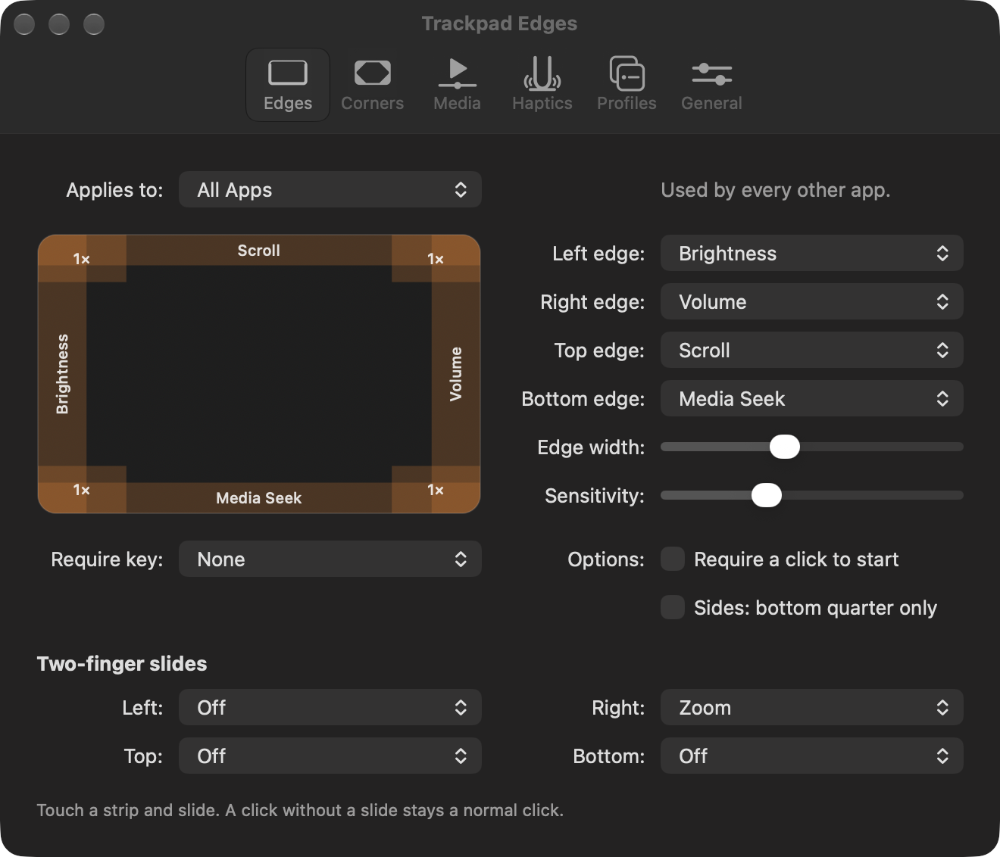
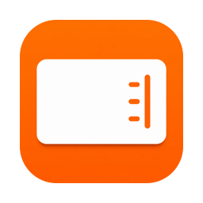
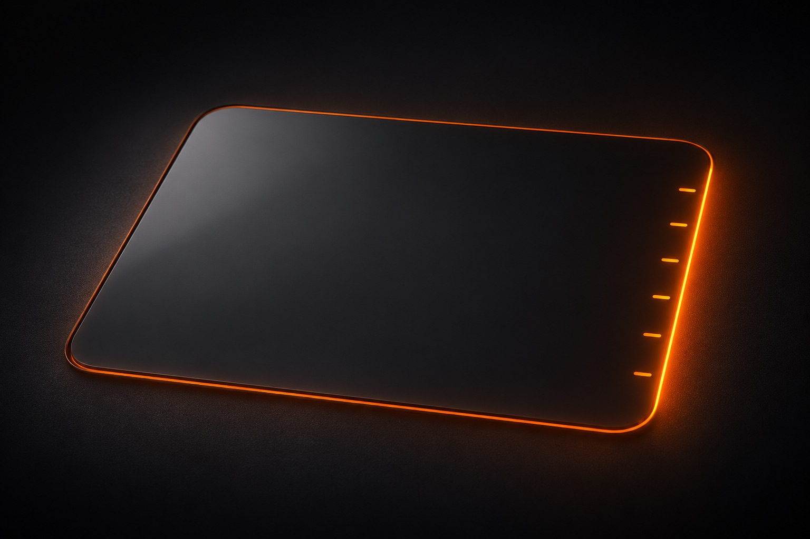
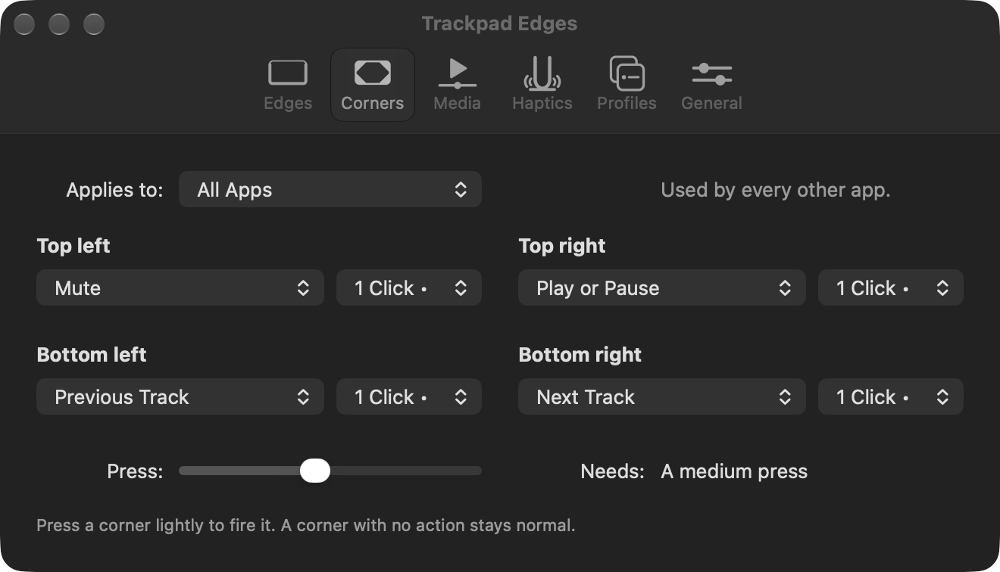
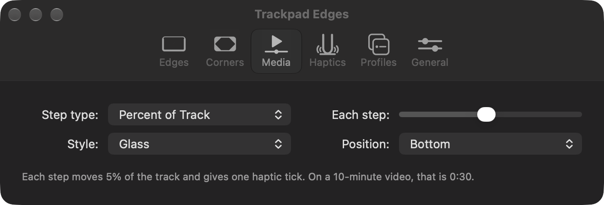
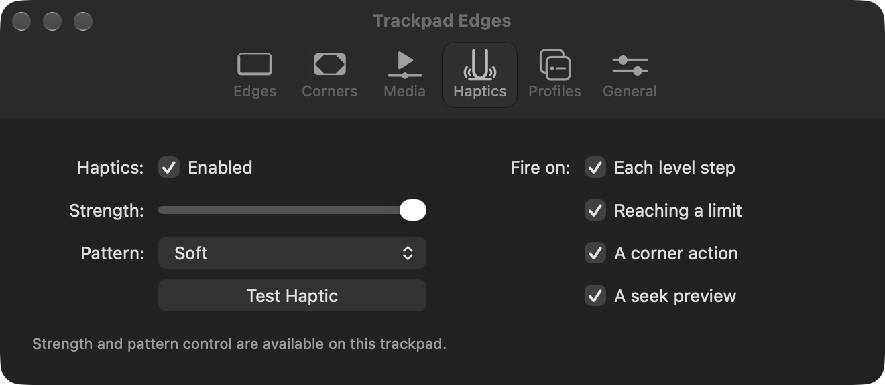
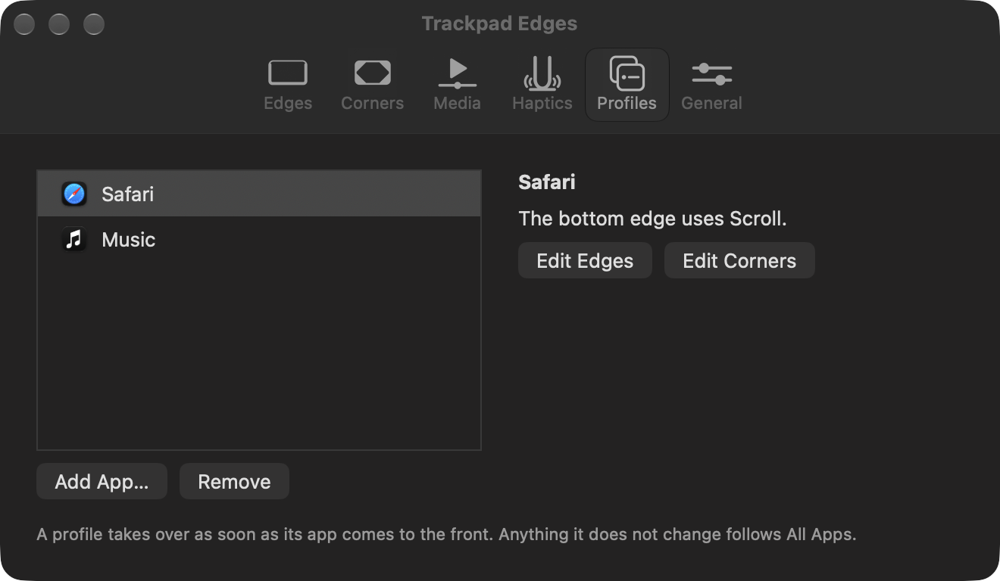
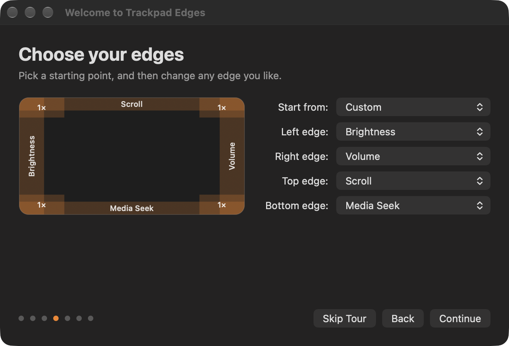

Edges, with one finger or two
Choose what each edge does, and watch your fingers on a live diagram of the trackpad. Every edge can hold a second job, so one finger can change the volume, and two fingers can zoom.


Trackpad EdgesSlide along the side of your Mac's trackpad to change the volume, the brightness, or your place in a video, and feel a haptic tick on each step. Press a corner to run whatever you choose. The middle stays a normal trackpad.
Drag an orange edge, or use the arrow keys, to try it.
Give each edge any of these controls. They move in fixed steps, so a slide goes as far as you expect, and a tap on an edge changes nothing.

Your trackpad taps back as you slide, so you can change the volume without looking. Choose how strong the tick is, or turn it off.
The app's window has a tab for each kind of setting, and a short tour sets everything up the first time you open it.
Choose what each edge does, and watch your fingers on a live diagram of the trackpad. Every edge can hold a second job, so one finger can change the volume, and two fingers can zoom.

Press a corner lightly to mute, play, or skip a track, to open an app, link, or file, to press a key combination, or to run a shortcut. One corner can hold a different action for each number of presses.

Choose how far one step moves, as a share of the track or as a number of seconds. A preview shows where you will land, and you choose how it looks and where it appears.

Set how strong each tick feels and which pattern it uses, and choose which events give one. A test button lets you feel the result right away.

The bottom edge can seek in your video player and scroll in your browser. Each app changes only what you tell it to, and the rest follows your usual setup.

A short tour walks you through the permission and your first slide, and then helps you choose your edges, corners, and haptics. You can take it again at any time.

This short film shows the edges and corners at work, and then the app's settings. It has sound.
The middle of the trackpad works as it always has. A finger that lands on an edge is treated as the start of a slide, so the pointer waits, and a click there arrives when you let go. A finger that rests there without sliding gives the pointer back after 0.6 seconds. A corner with an action uses that press for its action, and the top-left corner mutes until you change it.
The app needs this permission to press keys for you, including any shortcut you assign, to bring apps forward, and to watch trackpad clicks so that a slide or corner press does not also click. It reads key presses only while you record a shortcut, and during a gesture it checks which modifier keys are held. Without the permission, gestures stay off.
No. Your touches stay on your Mac, and the app has no accounts, no tracking, and no analytics. When it first opens, and then once a day, it checks this site for a new version. That request carries the app's version, and like any web request it shows your IP address to the site's host. An update downloads from the project's releases page, which sees that request in the same way. You can turn the check off in the General pane.
It works with whatever your Mac shows as now playing. An app that does not share its position cannot be moved, and testing so far has used Chrome.
macOS turns the keyboard light off when the room is bright. The app tells you when this happens, and the light comes back in a darker room.
Choose Report a Problem… from the app's menu bar menu. It copies a report of your versions, trackpads, and settings, and it opens a bug report for you to paste it into. The report leaves out paths, links, and names, and the app sends nothing itself.
The app needs a Mac with Apple silicon and a Force Touch trackpad, running macOS 13 or later. All testing so far has used macOS 27.2 and built-in trackpads.